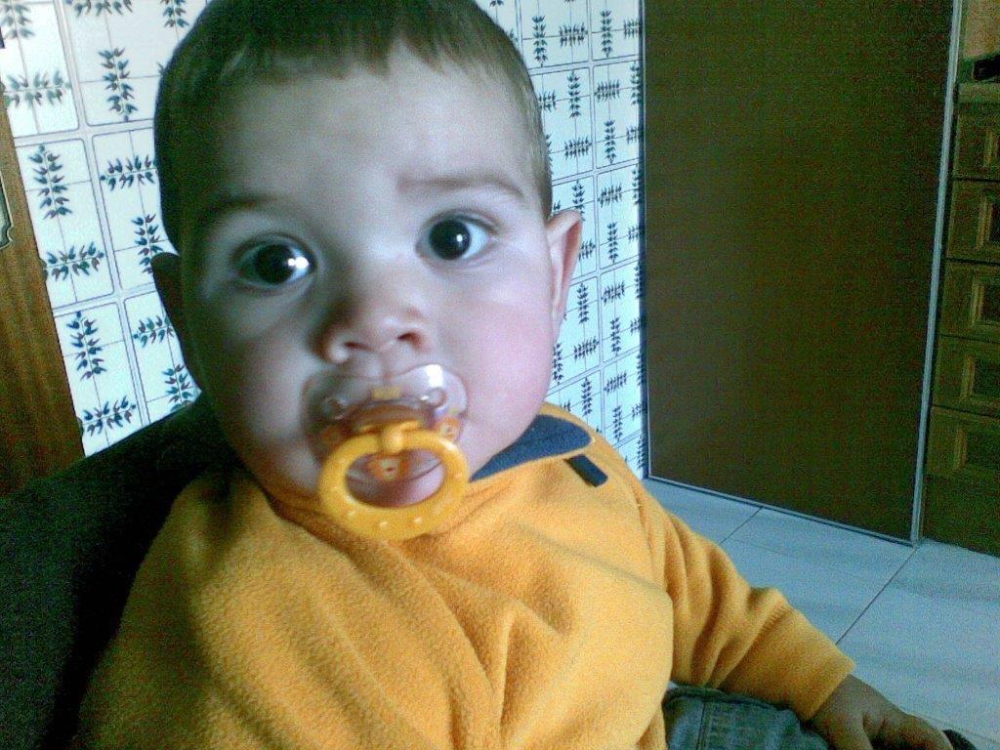
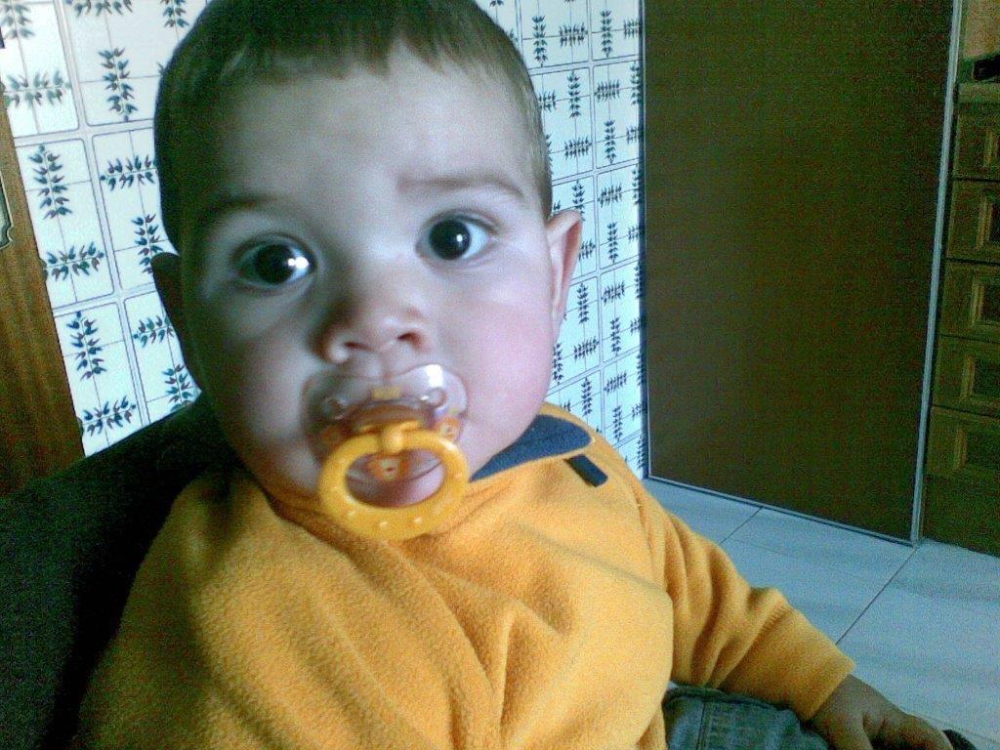

Quién soy
Me llamo Marcos de la Mota y soy de Madrid. Actualmente estudio el grado de Ingeniería Informática en la Universidad Francisco de Vitoria.
Me interesa la informática y me gusta especialmente el baloncesto.
Currículum básico
- Estudios: Grado en Ingeniería Informática (Universidad Francisco de Vitoria).
- Habilidades: uso básico de ordenadores, interés por el desarrollo web y la programación.
- Intereses: baloncesto y tecnología.
Imágenes
Aquí dos imágenes relacionadas conmigo.
 
